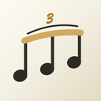
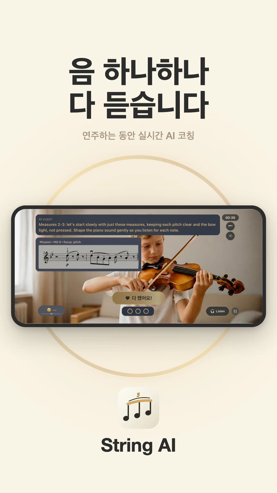
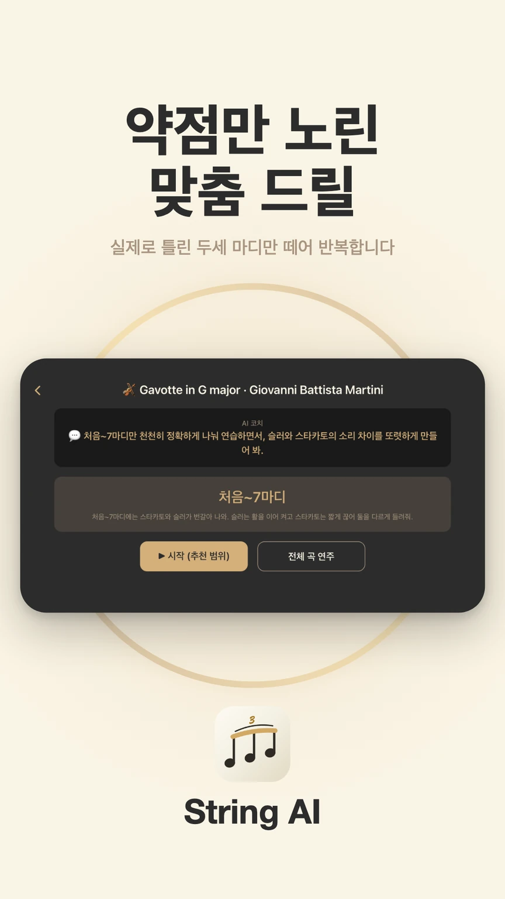
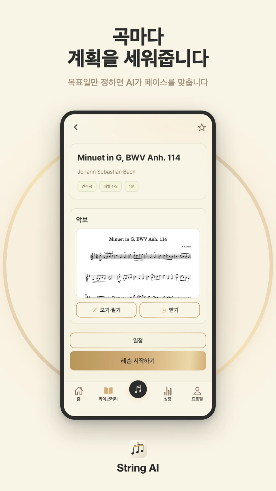
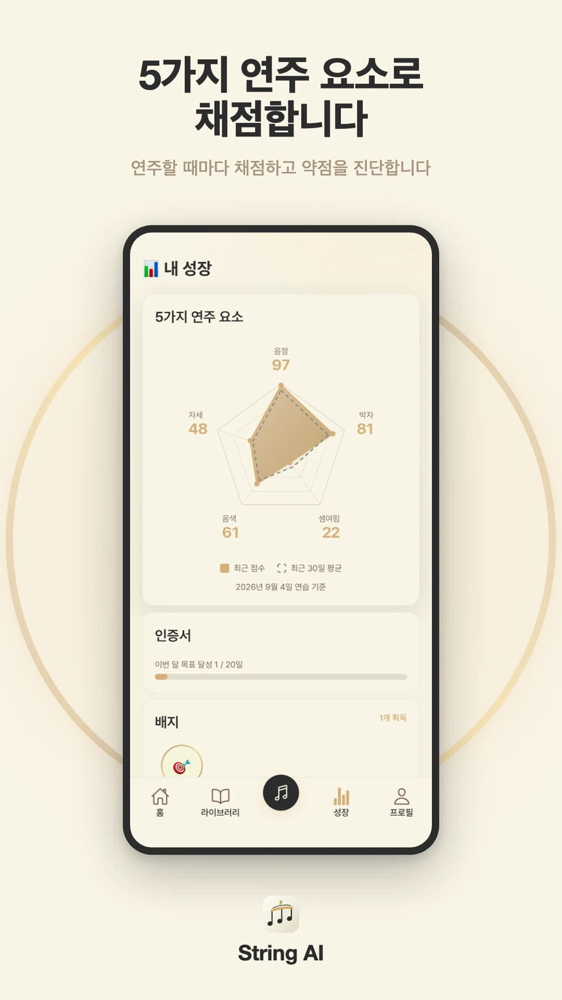
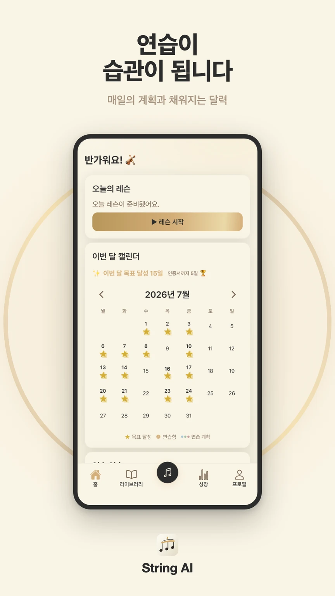
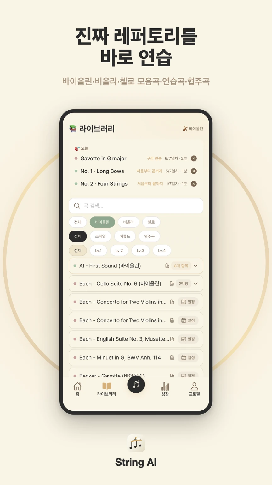

5가지 연주 요소 채점
음정·박자·셈여림·음색·자세. 연주할 때마다 5가지 연주 요소로 점수를 내고, 약한 요소를 진단해 딱 맞는 미션을 처방합니다.

String AI음 하나하나를 듣고, 자세를 보고, 매 연주를 채점해서 무엇을 고칠지 연주가 끝나면 바로 알려 줍니다. 레슨과 레슨 사이의 매일 연습을 String AI가 코치해요.

Signature
좋은 레슨은 "어디를, 왜, 어떻게"를 짚어 줍니다. String AI도 연주가 끝날 때마다 그렇게 해요.
음정·박자·셈여림·음색·자세. 연주할 때마다 5가지 연주 요소로 점수를 내고, 약한 요소를 진단해 딱 맞는 미션을 처방합니다.
어느 마디에서 무엇을 어떻게 고칠지 말로 짚어 줍니다. 선생님이 계시면 선생님의 지도 메모가 코치의 말에 반영돼요.
레슨은 현 네 줄을 맞추는 것부터 시작해요. 한 줄씩 바늘로 확인하고, 미션 중에도 작은 튜너가 지금 내는 음을 보여 줍니다.
How it works
바늘을 보며 현 네 줄을 맞추면 레슨이 시작돼요.
연습 기록과 목표 날짜를 보고 String AI가 오늘 연습할 범위를 정해요.
연습이 필요한 마디만 몇 마디씩 잘라 반복해요. 내 연주 다시 듣기, 참고 연주 듣기까지.
요소별 점수가 쌓이고, 달력·인증서·배지에 연습이 남아요.
In the app





For teachers
For parents
Plans
코칭은 모든 플랜이 같아요. 다른 건 하루 연습 시간뿐.
15분/일
월 450분
처음 시작하는 학생에게.
30분/일
월 900분
취미로 꾸준히 하는 페이스.
45분/일
월 1,350분
매일 길게 연습하는 페이스.
7일 무료 체험으로 시작하세요. 바쁜 날 못 한 시간은 같은 달 안에서 몰아 쓸 수 있어요(하루 연습 시간의 3배까지). 가격은 스토어에서 확인하세요.
FAQ
바이올린, 비올라, 첼로를 지원해요. 악기별 악보 라이브러리(스케일·에튀드·곡)가 준비되어 있고 계속 늘어나요.
네. 애플 정책상 구독은 Apple ID 하나에 1개라, 가족 공유에서 자녀별 Apple ID를 만들어 각자 구독하면 돼요. 결제는 전부 부모님 카드로 청구되고, 매번 부모 승인(구입 요청)을 거치게 할 수 있어요.
연주 음성·영상은 서버에 업로드하지 않아요. 레슨 임시 파일은 사용 후 정리하고, 연습실에서 저장한 영상은 기기에 남아 직접 삭제할 수 있어요. 만 14세 미만의 데이터는 부모 동의 후에만 수집해요.